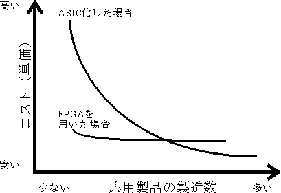
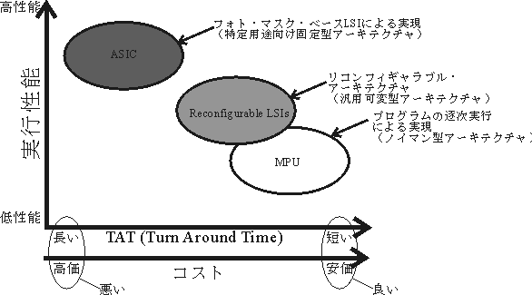

| PDFファイル | 容量 | |
|---|---|---|
| 論文概要 | SUSU_DRPAPER_ABST.pdf | 188,454 Byte |
| 本文 | SUSU_DRPAPER.pdf | 10,380,198 Byte |
本研究の目的は，再構成可能集積回路の１つである，FPGA (Field Programmable Gate Array) の「再構成可能」という特徴を生かせる応用（アプリケーション）を探索し，その有効性を実証することである．本論文では，４つの異なる側面からの適用例を用いて，FPGAの「再構成可能」という特徴を生かせるアプリケーションについて論じる．
FPGAなどの再構成可能集積回路は1980年代より一般に，LSI開発における，フォト・マスクを作成する前のロジック／タイミング検証（論理エミュレーション）を行うためのラピッド・プロトタイピング・ツールとして，また，製造数が少ない場合におけるASIC (Application Specific Integrated Circuit)やASSP (Application Specific Standard Product)などの代替として用いられてきた．そして，近年さらに，その「再構成可能」という特徴をハードウェア・アーキテクチャに取り込み，従来の逐次型MPU (Micro Processor Unit)では実現が困難な処理を効率良く処理しようとする試みが注目を集めている．これはリコンフィギャラブル・コンピューティングとよばれ，特に算術演算の高速化を中心に研究が進められており[1]〜[10]，FPGAよりさらに算術演算向きなアーキテクチャの再構成可能集積回路が次々に開発されている[7][9][10]．一方，本研究では従来の一般的な再構成可能集積回路であるFPGAを対象として，その再構成性を生かす応用について検討した．
FPGAは，実装対象となるアルゴリズムの並列度が非常に高い場合，現在注目されている算術演算向きの再構成可能集積回路よりも，高速な処理を実現できる可能性がある．また，I/Oインターフェースなど，小規模で，高速な処理を要求する制御回路などのランダム・ロジックは，FPGAでの実現に向いている．さらに，FPGAは既に市場に出てから20年以上経っており，ASIC/ASSPなどの代替として製品に組み込まれ，普及しているため，その応用であれば実用化もし易い．そこで，本研究ではFPGAへの並列度の高いアルゴリズムの実装，I/Oインターフェースへの応用など行い，FPGAの「再構成可能」という特徴を生かせるアプリケーションの有効性を実証した．さらに，FPGAを用いた新しいハードウェア開発手法を提案し，IP (Intellectual Property)の流通への応用を行った．
|
 |
|
図.1 ASIC化した場合とFPGAを採用した 場合の応用製品の製造数とコスト. |
|---|
再構成可能集積回路は，その名の通り回路構成を再構成できる集積回路で，回路の再構成によってさまざまなアプリケーションに容易に対応可能である．このため，従来より，フォト・マスク・ベースのLSIを設計する際の検証ツールとして利用されてきた．しかし，今日の半導体製造技術の発展により，再構成可能集積回路の集積密度，つまりその上に実現可能な回路の規模が大きくなることで，その製品開発におけるTAT (Turn Around Time)の速さから，フォト・マスク・ベースのLSIに代わり，製品にも実装されるようになった．製品の製造数によってはコスト面でもASICなどに勝る場合があり（図.1），メーカは製品の種類や市場規模などによってフォト・マスクから作成する場合と，再構成可能集積回路を採用する場合とを使い分けるようになった．
再構成可能集積回路の基本構造は，基本要素となる回路が並列多重実装されており，その基本要素回路間の接続を変更可能とすることでさまざまな回路を実現できる．またその種類は，基本要素となる回路の種類や，回路間の接続を変更可能にする方式の違いなどによりさまざまなものがある．現在の再構成可能集積回路は，大きくLUT (Look Up Table)アレイ型とALU (Arithmetic Logic Unit)アレイ型に分類できる．LUTとは，予めデータを書き込んだRAMのアドレス入力を，データ入力として扱うことで，結果的に書き込まれたデータに従った，任意の組み合わせ回路を実現するものである．従ってその実装形式はRAMそのものとなる．ALUは，従来からMPUに用いられている演算回路のことで，AND，OR，NOTなどの論理演算に加え，加算，減算，シフト演算，或いは掛け算などの算術演算を行う回路を一つにまとめ，外部からの命令により指定の演算を行うものである．実装形式は通常，トランジスタ・レベルで直接製造される．LUTアレイ型とALUアレイ型は，粒度という面から見るとLUTアレイ型が細粒度で，ALUアレイ型が粗粒度である．また，逐次処理型のMPUは，ALUアレイ型よりもさらに粒度が粗いと考えることが出来る（表.1）．
| LUTアレイ型 | ALUアレイ型 | MPU | |
| 例 | XILINX Virtex, Spartan, ALTERA Stratix, Cyclone | 広島大 FPAccA, NEC DRP, IP-Flex DAP/DNA | Intel x86系, IBM/Motorola PowerPC系, Z80, H8, ARM |
| 粒度 | 細かい | 粗い | さらに粗い |
| 適した設計レベル | RTL | 演算命令レベル | Behavior Level |
まず，LUTアレイ型は，基本要素となる回路を，LUTというNANDゲートのように汎用性の高いものとし，これを通常のゲートアレイのように多数並べて，その接続先を多数のスイッチで切り換える構成（細粒度の構成）で，非常に汎用性の高い再構成可能集積回路である．しかし，この構成では，アプリケーションによっては要求される基本要素回路，スイッチの数が非常に多くなり，信号遅延が大きくなることで，全体の動作周波数を高くできない．XILINX社やALTERA社製のFPGAやCPLDがこの構成にあたる．ALUアレイ型は，ALUという，ある程度大きな演算回路を基本回路としたもの（粗粒度の構成）で，必要なスイッチ数，基本要素回路数共に少なくなり，全体の動作周波数が高められる．しかし，粒度が粗いため，アプリケーションによっては実装が困難となる．このような構成としては，広島大学 越智のFPAccA (Field Programmable Accumulator Array)[7][8]，IP-Flex社製のDAP/DNA[9]やNECエレクトロニクス社製のDRP[10]などがある．また，従来のIntel x86系，IBM/Motorola PowerPC系，或いは組み込み機器向けのZ80， H8， ARMなど，ノイマン型アーキテクチャのMPUは，一般に単一のALUで構成される．このため，前述の再構成可能集積回路と異なり，複雑な切り替え機構などがない分，信号遅延が小さく，最も高い周波数での動作が可能となる．しかし，最も演算器の粒度が粗い（演算器が１つしかない）ため，特に並列処理を基本とするアプリケーションは実装効率が悪い．
従って，再構成可能集積回路は単にラピッド・プロトタイピング・ツールとして機能するだけでなく，そのアーキテクチャは，従来のノイマン型アーキテクチャよりもアプリケーションによっては，その実装に適したアーキテクチャである可能性がある．次に，このように再構成可能集積回路のアーキテクチャを，演算器アーキテクチャとして捉えた，リコンフィギャラブル・コンピューティングについて述べる．
|
 |
| 図.2 リコンフィギャラブル・アーキテクチャの位置付け. |
|---|
近年，FPGAなどの再構成可能集積回路を用いて実現される，リコンフィギャラブル・コンピューティングの研究が盛んに行われている[1]〜[12]．リコンフィギャラブル・コンピューティングとは，再構成可能集積回路の「再構成機構」をハードウェア・アーキテクチャとして取り込み，アプリケーションに適した計算方式を実現するものである．現在行われている研究の多くは，処理速度の面でMPU (Micro Processor Unit)を使うことが困難な演算を高速化するものに関する． ある特定のアプリケーションを実現するために，速度，サイズ，消費電力の全ての性能面で最も高い性能を達成するハードウェアを製造する方法は，フル・カスタムのフォト・マスク・ベースで製造する方法である．これは一般的に特定用途向け集積回路 ASIC(Application Specific Integrated Circuit) と呼ばれる．しかし，ASICはその都度フォト・マスクから設計，製造を行う必要があるため，非常に高度な設計・製造技術が必要となる他，開発・製造期間が長く，開発・製造コストも高い．フォト・マスク製造の期間を短縮し，また製造コストを削減する目的で，フル・カスタム方式の他にスタンダード・セル方式，ゲートアレイ方式，或いはストラクチャードASICなどがある．しかし，予め製造しておけるのはフォト・マスク・レベルであり，工場で製造する必要があることに変わりない．一方，既存のMPUを用いて処理する場合は，予めMPUを搭載したシステムを作り上げた後で，任意のアプリケーションを実装することができる．従って，その実行性能が多少落ちたとしても，開発期間（TAT: Turn Around Time）やコストを含めて評価したときに，MPUでの実現が採用される場合が多い．従って，異なるアプリケーションにどの程度対応できるかという``汎用性''と，速度，サイズ，消費電力などの実行性能を考えると，図.2のようになる．リコンフィギャラブル・コンピューティングが対象としている領域は，フォト・マスク・ベースLSIによる特定用途向けの固定アーキテクチャと，MPUのノイマン型アーキテクチャの中間にある．リコンフィギャラブル・アーキテクチャの優れた点は，フォト・マスク・ベースLSIを製造する場合よりも開発・製造期間が短く，低コストである上に，アプリケーションによっては，MPUで処理する場合よりも高性能な実行性能を得られることである．
現在，リコンフィギャラブル・コンピューティングの研究で注目されているのは，特に算術演算の高速化である．これは，従来のMPUの逐次処理型アーキテクチャに代わる新たな``汎用コンピュータ・アーキテクチャ''の一つ，という位置付けで進められている研究が多い．一方，本研究では算術演算の高速化アーキテクチャ以外の応用を対象とし，その効果的な応用を検討した．これはFPGAのようなLUTアレイ型の再構成可能集積回路の方が，ALUアレイ型の再構成可能集積回路より，粒度が細かく，MPUの粒度とその差がより離れているため，MPUが苦手とする処理をより効率的に処理できる可能性があると考えたためである．
FPGAの効果的な応用（アプリケーション）は，従来のMPUで高い実行性能（速度，サイズ，消費電力）を得ることが困難で，かつ高い汎用性を要求するものである．これは，
現在，ノイマン型アーキテクチャのMPUの処理速度は，逐次処理でありながら，数百MHz後半〜数GHzと非常に高い基本動作周波数で動作しているため，かなり高速である．このため，同一の製造技術で作られていながら，汎用性を高めたことで数十MHz〜数百MHz前半と基本動作周波数が下がってしまったFPGAでは，MPUで行っていた処理をそのまま実装しても高速化は図れない．FPGAで高速化が図れるのは，並列性の高い処理のみである．MPUは演算の種類によって実行に必要なクロック・サイクル数が異なり，さらにパイプライン・ストールなどの影響を考慮する必要があるため，正確な性能比較は難しいが，例えば，単純に基本動作周波数1GHzのMPUと同様の処理速度を，基本動作周波数100MHzのFPGAで実現するためには10倍程度の並列度が必要となる．逆に，数十〜数百倍以上の並列度が得られる処理であれば，FPGAにより，MPUより高速な処理の実現が期待できる．
また，通信機器の内部制御やI/Oインターフェースなどで用いられる，多数のパルスのタイミングを並列に制御する回路などは，細粒度でRTLでの設計に向くFPGAの方が，ALUアレイ型の再構成可能集積回路やMPUのような粗粒度なアーキテクチャに比べ，実装効率が高い．従って，粒度の細かい処理の場合はFPGAの方が高速，或いは小さい回路規模で実現できる可能性がある．
論理回路レベル（RTL）での構成が大きく変わらない場合には，複数の要求を満たす回路全てをワイヤード・ロジックで実装し，要求に応じて切り換えられるような回路構成でASIC化すれば，最も高性能なハードウェアが実現できる．しかし，要求に応じて回路の構成を大きく変える必要がある場合には，各回路の独立性が高くなる（共有化可能部分が減少する）ため，それぞれの回路をワイヤード・ロジックで実装すると，実装に必要な回路規模が大きくなってしまう．さらに，ASIC化の時点で想定されていなかった全く新しい機能を後から追加するようなことは，特定用途向けの固定アーキテクチャではまず不可能である．このような想定外のことにも対応できるような汎用性を持たせることは，即ち汎用向けのリコンフィギャラブル・アーキテクチャを採用することとなる．広義の意味においては，要求に応じて論理回路レベルでの構成が少しでも切り換えられるような構成は，全てリコンフィギャラブル・アーキテクチャであると言える．しかし，本論文では現在の再構成可能集積回路のLUTアレイ型アーキテクチャ，或いはALUアレイ型アーキテクチャのように，汎用性の高い基本演算回路を多数並列実装し，後から想定外の全く異なる機能を実現できる，汎用アーキテクチャをリコンフィギャラブル・アーキテクチャと定義する．
また，ASIC化した後から，前述のように回路構成の変更が大きく要求される場合でも，その頻度が数ヶ月〜数年単位など非常に低く，かつ，コンシューマ向けの量産製品など，コスト面でも問題が無い場合には，ASICでも，製造し直すことで対応できる．しかし，要求される回路変更の時間間隔がASICの開発サイクルよりも短い場合，さらには数msサイクル以下で回路変更を行う動的再構成などは，FPGAなどのもつ，リコンフィギャラブル・アーキテクチャでなければ実現できない．また，先に述べたように，ASICの製造には多額のコストも必要となるため，量産製品などでなければ，ほとんどの場合においてASIC化は困難である．
本論文では細粒度の再構成可能集積回路であるLUTアレイ型のFPGAを用いて，上記のようにMPUやASICなどで実現が困難なアプリケーションの実現性を評価し，再構成可能集積回路の可能性について論じる．具体的には，FPGAに下記の４つのアプリケーションを実装し，評価することでその可能性を探った．
まず，並列性が非常に高いパターン認識のためのアルゴリズムである，確率的ニューラルネットワークと，それを用いた画像認識装置への適用を行った．確率的ニューラルネットワークは，アルゴリズムの並列性が非常に高いため，細粒度のFPGAへの実装に非常に適したアルゴリズムである．さらに画像認識装置では，画像処理や特徴抽出などの前処理も必要となるが，この前処理は対象の種類などに応じて，大きくかつ頻繁に回路の変更が要求されるため，このことからもFPGAに適したアプリケーションである．本論文では，認識対象に合わせて，処理回路の再構成を行うことの他に，確率的ニューラルネットワークをFPGAと外部RAMを用いて効率よく実装する，新たな手法を提案し，その実装結果と評価結果について述べる．
確率的ニューラルネットワーク(PNN: Probabilistic Neural Network)[13][14]はノンパラメトリックな統計的パターン認識手法 の一つで，その認識精度の高さから，近年，顔認識[15]や気象画像認識[16][17]といった大規模な実応用問題への適応が盛んに行われている．その理由は，構造が単純で並列性が高く，認識精度を決定するパラメータも１つのみで，扱いやすい上に，高い認識精度を得られるからである[18]．PNNのもつ認識パラメータは１つで，これがPNNの推定する確率密度分布の形状を決定し，認識精度を大きく左右する．従って，このパラメータは慎重に決定する必要があるが，その最適値は，認識対象や認識環境によって変化するため，これを決定論的に定める方法はない．このため，広範囲な探索空間を探索する必要があり，これには高速なプロセッサを用いても膨大な処理時間を要する．
そこで通常このパラメータはTry and Error で人手によって経験的に決定されるか，全探索することになる．経験的に手動で決定する場合は確実性，再現性が低く，また認識システムを構築するまでに時間が掛かる．一方，全探索の場合は確実で，再現性も高いが，やはり探索には時間が掛かってしまう．そこで本論文では，この認識パラメータを高速に全探索し，最適値を求めることのできる，従来にない新しいハードウェア・アーキテクチャSPA(Sigma-Parallel Architecture)を提案する．SPAは，マルチ・プロセッサの実装の上で問題となる，メモリ-プロセッサ間のピン・ボトルネック問題を解決し，従来より，多くのプロセッサの実装を可能にする．このことから，探索の並列度を高くすることができ，高速な探索が可能となる．
本アーキテクチャで設計し，XILINX社製のFPGAであるXCV1000E-6HQ240C[24]に実装した回路は，Pentium 1GHzのPC上に実現したソフトウェア・プログラムで探索する場合に比べ約68倍の速度性能が得られることを確認した．また，実際にこの学習エンジンを含むハードウェア認識システムを開発し，認識問題として，手形状画像を対象とした簡単な認識処理の評価実験を行った．
次に，コンピュータ間通信ネットワークで用いられる，IP (Internet Protocol)パケット・フィルタ装置への適用を行った．IPパケット・フィルタの処理も，確率的ニューラルネットワークの場合と同様に，非常に高い並列性をもっているため細粒度向きの処理である．また，装置が設置されるネットワークの状況に応じて優先される処理性能が異なる．このため状況に応じて頻繁に回路を変更する必要がある．ただし，この再構成性の応用例は，確率的ニューラルネットワークの場合と異なり，限られたハードウェア・リソースの中における，処理可能なデータ量と処理速度とのトレードオフという観点から研究を行った．本適用例も，市販のFPGAを用いて行った実験と，その評価結果について述べる．さらに，非常に変革の速い分野で，頻繁に処理アルゴリズムが更新されるため，この点からも再構成可能集積回路に向いたアプリケーションである．
IPパケット・フィルタ装置は，一般にルータなどのネットワーク機器の中に実装されているもので，普段我々がその存在を意識するものではないが，ネットワークのトラフィック制御やセキュリティ面で非常に重要な役割を果たしている[19]〜[22]．また，ネットワークの上流になればなるほどパケットのトラフィック量が増すため，より高速な処理が必要となる．逆に下流ほどトラフィック量は少ないが，詳細なパケットの制御が要求される．このため本来は要求に応じて適切なアーキテクチャが異なるが，現在のルータ装置は上流向けの最大スループットが性能の指標であり，そのために処理回路のASIC化も行われている．しかし，固定されたアーキテクチャで構成されたルータ装置は，トラフィック量が少ない場合には回路の稼働率が低下するため無駄が多い．そこで，再構成可能集積回路を用いた，RPCA (Reconfigurable Parallel Comparation Architecture)とRPCAで構成された性能可変IPパケット・フィルタ装置を提案する．RPCAは比較演算器とレジスタの構成の変更を可能にするものである．RPCAで構成されたIPパケット・フィルタはトラフィック量が多い場合にはスループットを重視し，少ない場合にはパケットの制御精度を重視するなど，要求に応じてアーキテクチャを変更し，常に最大の回路稼働率を維持することができる．本研究はIPパケット・フィルタ処理の核となる比較演算に着目し，FPGAの再構成可能という特徴を生かして，用途に応じて常に最適な比較演算器を構成するアーキテクチャを提案した．
実装結果はそれぞれ，速度優先で 128IPアドレス処理可能な場合の処理時間が120ns，データ量優先で2,048IPアドレス処理可能な場合の処理時間が1,360nsであった．これはそれぞれ約4.27Gbps，377Mbpsのデータ伝送速度でOn-The-Flyフィルタ処理を実現できることを示している．従って，演算の種類が同一であっても，優先する処理性能が用途によって異なるアプリケーションでは，FPGAの再構成性を十分生かすことができることがわかった． また，実装はXILINX社製のFPGAであるXCV300E-6PQ240C[24]を用いて完全同期設計を行い，ベースクロックは100BASE-TX対応のPHYチップであるRealTek社製のRTL8201BLを使用した都合で25MHzとした．
さらに，上記1， 2のような演算回路ではなく，I/Oインターフェースにおいて，その「再構成可能」という特徴を生かすアプリケーションについて提案し，その実装結果と評価結果について述べる．提案するメタ・I/OインターフェースはFPGAを用いて実現される，汎用I/Oインターフェースで，PCやPDA (Personal Digital Assistant)などにおけるUSB (Universal Serial Bus)に代わるものである．インターフェース回路は高速で，かつ細かなタイミング制御が要求されるため，MPUでの実現を含む，ALUを用いた粗粒度構成には不向きである．一方FPGAは，もともとRTL (Register Transfer Level)での設計に適したアーキテクチャであり，回路規模の面からも効率よく実現できる．また，コンシューマ向けの周辺装置のI/Oインターフェースは，エンドユーザにより頻繁に変更が要求されるため，FPGAでの実現に非常に適したアプリケーションである．
現在，パーソナル・コンピュータやPDAなど携帯端末とその周辺装置間のI/Oインターフェースは``標準規格''化されることで，装置の種類，メーカが異なっていても相互に接続が可能となっている．しかし，この``標準規格''は必ずしも全ての装置間のインターフェースとして適しているものではなく，``標準規格''に合わせるために余分な回路を必要とし，装置のサイズやコストなどを上げる原因となっている．また，装置毎に異なる要求性能に対応するために，さまざまな``標準規格''が作られることで，PDAなどの実装面積が限られた装置に多くのインターフェース回路を用意しなければならなかったり，種類が増えることがユーザを惑わす原因にもなっている．``標準規格''の中でもEIA-232 (RS-232C)やUSBは，多くの種類の装置間のI/Oインターフェースとして利用されており，特にUSB 2.0の伝送速度はより多くの装置間インターフェースの要求仕様を満たしており，今後このような``標準規格''の統一化が進んでいくことで後者の問題は解決されるであろう．しかし，前者の``標準規格''が要求仕様と一致しない問題は解決されない．
そこでFPGAなどの再構成可能集積回路をI/Oインターフェースに応用した，メタ・I/Oインターフェースを提案する．メタ・I/Oインターフェースは，１つの共有コネクタで``標準規格''と同様の相互接続性を保証しつつ，各装置間に最適な``非標準的''なプロトコルを用いたインターフェースの提供を可能とする．本論文では，キーボード入力装置のインターフェースを例に，XILINX社製のFPGAであるXC2S50E[26]を用いた試作機による実装評価を行い，その有効性を確かめた．
４つ目のFPGAの効果的なアプリケーションとして，ハードウェアの開発手法に関する新たな提案を行う．これは，これまで述べてきた回路アーキテクチャに関するものではなく，本来のFPGAの利用方法を発展させたものである．フォト・マスク・ベースのLSIは，設計データをもとに半導体工場で製造されるが，FPGAは設計データを直接ロードすることで目的の回路を実現できる．ここで用いられるFPGAは，予め半導体工場で製造済みの集積回路である．このため，回路設計者は，あたかも設計＝製造として開発を行うことができ，これがラピッド・プロトタイピング・ツールとしてのFPGAの特徴である．ところが，ここでさらにFPGAの設計データを，コンピュータ間通信ネットワークを通じて配信することを考えると，従来物理的なシリコン・チップであった集積回路を，あたかもネットワークを通じて伝送可能であるかのように扱うことができる．このことは単にメーカ内での開発効率の向上だけでなく，開発層をメーカ以外に広げる，新しいアウトソーシング形態の実現を可能にする．本論文では，FPGAとインターネットを用いて，特に教育機関を含めた，回路設計のアマチュア層へ広げる手法を提案し，その実施例と評価結果について述べる．
パーソナル・コンピュータが一般に普及して20年余り，コンピュータを媒体としたソフトウェアの世界では，Linux， BSDなどのOSをはじめ，アプリケーション・ソフトウェアに至るまで，さまざまなオープンソースソフトウェア[31]〜[33]が流通している．このオープンソースソフトウェアにはさまざまな特徴があげられるが，中でも取り分け重要なのが，その多くが個人によって開発されているということである．一方，ハードウェアであるコンピュータ本体はその性質上，ソフトウェアのように個人で開発することは困難であった．しかしFPGAなどの再構成可能集積回路の登場により，コンピュータ自体をソフトウェアのように，個人レベルでも容易に開発することが可能となりつつある．そこでFPGAとインターネットを用いて実現可能な，新しい開発手法として，フリー・IP (Intellectual Property)による開発を提案する．フリー・IPとは，従来ワイヤード・ロジックで実現されていたハードウェアを，FPGAに置き換えることで，物理的なLUTと，LUTに書き込まれる回路構成情報に分離し，その回路情報をフリー（法律上，自由に利用，配布可能）とすることで，ハードウェアの一部のオープンソースソフトウェア化を可能にするものである．このようなフリー・IPは主に海外のWebサイトで既にいくつか配信されている[34][35]．しかし，これらフリー・IPを利用することは，企業などでは信頼性，保証などの面から難しく，また，回路設計のアマチュアなど，個人レベルで利用するには技術的に敷居が高いなどの理由から困難である．これらの問題を生じる要因は，多くの場合フリー・IPの質にあるのではなく，ドキュメントの不足やアプリケーション例の不足，入手の容易性の低さなどにあると思われる．そこでこれらの問題を解決した，個人，或いは企業でも利用できるようなフリー・IPライブラリを提供することで，ハードウェア開発において，オープンソースソフトウェアと同様なバザール型の開発手法[30]と，新たな開発層の確立をめざす．
実際にXILINX社製のFPGA向けにインターフェース回路を中心としたIPコア・ライブラリを開発し，インターネット上のWebサイト(http://www.susubox.org/)上で配信した．その結果，より普及を速めるためにはドキュメント整備の他に，回路設計のアマチュア層に魅力的なIPコアのアプリケーション例が必要であることがわかった．また現在，FPGAの開発ソフトウェアは容易に入手可能となったものの，FPGAを実装した開発プラットフォーム（ボード）が高価で入手が困難であるため，これを安価で大量に普及させる仕組みが必要であることがわかった．
本論文では，再構成集積回路の中でも，LUTアレイ型のアーキテクチャを持つFPGAを用いて，その「再構成可能」という特徴を生かせる，効果的なアプリケーションについて述べた．また，実際に４つのアプリケーションに適用し，その有効性を示した．
再構成可能集積回路の「再構成性」を生かせるアプリケーションは，従来のMPUで実現が困難な高速処理，サイズ，省電力性能を要求し，かつASICなどのフォト・マスク・ベースLSIで実現が困難な汎用性，TAT，コストが求められるものである．これは，
条件１．）MPUでの実現が困難なものとして
条件２．）ASIC化が困難なものとして
また，下記に示す具体的な適用例にて実証した．
確率的ニューラルネットワークはアルゴリズムの並列性が非常に高く，これをFPGAに実装して構築した画像認識装置は，認識対象によってはビデオレート時間で98.3%以上の認識精度を達成するなど，高い性能を実現することができた．また，このような高い性能を得るためには，認識対象に応じて前処理手法などを変更する必要があり，これはコスト面やTATから考えると，ASIC化するよりもFPGAで実現した方が適したアプリケーションであるといえる．さらに，本研究で開発したシステムは，高速にPNN計算が行えるため，特徴抽出が困難な認識処理において特に有用となる見通しを得た．
また，IPパケット・フィルタも非常に並列性の高いアルゴリズムを持ったアプリケーションであり，FPGAによって実現されるIPパケット・フィルタ装置は，特に基幹ネットワーク〜エンドユーザ・ネットワークを結ぶ，中流ネットワークにおいて，性能，コスト面から有用であることがわかった．さらにネットワークの状況に応じた処理速度と処理可能なIPアドレス数の優先順位の変更が可能なIPパケット・フィルタ装置が実現できる見通しを得た．
本論文で提案したFPGAによって実現される汎用I/Oインターフェースは，PCやPDAと周辺装置間のI/Oインターフェースなど，従来ASIC/ASSP化されていたインターフェース回路に適用することで，そのプロトコルを標準規格でない，各メーカ独自のものを使用することを可能とした．これにより，周辺装置毎に最適なプロトコルを実現可能となり，周辺装置の高性能化が期待できる他，開発コストの低減や，周辺装置のユーザビリティの向上が可能となる見通しを得た．
４つ目の適用例は他の適用例と異なり，回路の性能向上などに関するものではなく，ハードウェア開発における，開発効率の向上の可能性を示した．FPGA上に構築する回路を，オープンソース・IP（オープンソース・ソフトウェア）としてインターネットを通じて配信し，新しいアウトソーシングの形態を構築することで，メーカにおけるハードウェア開発の効率を向上させるだけでなく，学生などを含む，回路設計のアマチュア層へ製品開発を広げることが可能であることを示した．
ｂｙ すすたわり